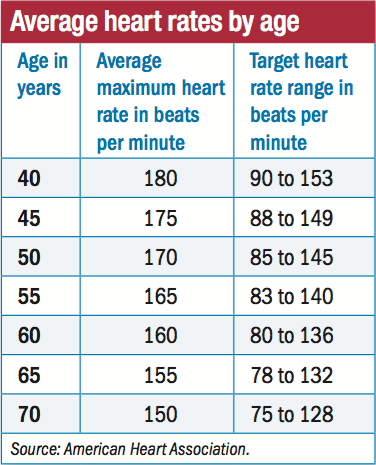

The speed of the heart is not the only factor to bear in mind when considering its health. The rhythm of the heartbeat is important too. The heart should beat with a steady rhythm, and there should be a regular gap between beats.
The muscle has an electrical system that tells it when to beat and push blood around the body. A faulty electrical system can lead to an abnormal heart rhythm.
It is normal for the heart rate to vary throughout the day in response to exercise, anxiety, excitement, and fear. However, a person should not normally be aware of their resting heartbeat.
A person may also feel the sensation of having missed or “skipped” a beat, or it may feel like there has been an extra beat. An extra beat is called an ectopic beat. Ectopic beats are very common, usually harmless, and do not often need treatment.
People concerned about palpitations or ectopic beats should speak to your doctor who will be able to carry out an electrocardiogram (ECG) to assess the heart rate and the rhythm.
There are many different types of abnormal heart rhythm. The type depends on where in the heart the abnormal rhythm starts, and whether it causes the heart to beat too fast or too slow. The most common abnormal rhythm is atrial fibrillation. This replaces the normal heartbeat with an erratic pattern.
A healthy heartbeat is crucial for protecting cardiac health.
While exercise is important for promoting a low and healthy heart rate, there are several other steps a person can take to protect their heart health, including:
1.Reducing stress: Stress can contribute to an increased heart rate and blood pressure. Ways to keep stress at bay include deep breathing, yoga, mindfulness training, and meditation.
2.Avoiding tobacco: Smoking leads to a higher heart rate, and quitting can reduce it to a normal level.
3.Losing weight: More body weight means that the heart has to work harder to provide all areas of the body with oxygen and nutrients.

Content Source：Harvard Health、Cleveland Clinic